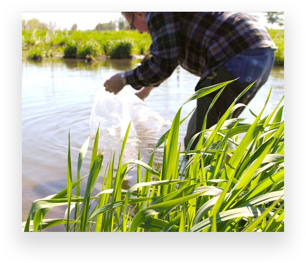
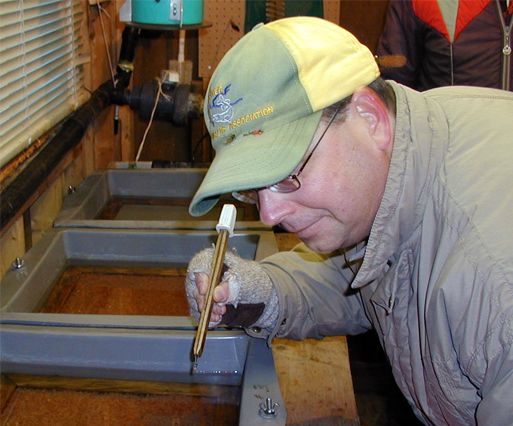

In the spring of 1986 the TRAA was formed by anglers concerned with the state of the fishery in the Thames River watershed, particularly the dwindling smallmouth basspopulation in the North Thames River.
The TRAA is not a fishing club, although most members are anglers and share fishing as a common interest. We are a "hands on" environmental group who likes to work at a grass roots level.
The TRAA is a volunteer organization, governed by a formal constitution and by-laws. An elected Executive, with the guidence of the General Membership, sets the policies and direction for the TRAA.
The TRAA has a history of always having a core group of active members supported by those who just want to be part of the solution. Either way, every member of the TRAA is active in their advocacy for the health of the Thames River watershed and its inhbitants.

The TRAA Works at a Grassroots Level Within the Thames River Watershed to: protect, enhance and regenerate a viable, multi-species, year-round fishery.
promote and participate in environmental clean-up, pollution control and rehabilitation.
breed, relocate and stock to re-establish or augment appropriate species of fish.
promote environmentally sound sport fishing practices.
form partnerships with community businesses, government agencies, special interest groups, landowners, and other stakeholders in the Thames River watershed.
increase public awareness of the unique diversity of the Thames River Watershed, its challenges, its recreational opportunities and its vital importance to our community
"Hands-on Environmentalism" is what we do ...
This is what sets the TRAA apart from other clubs and organizations. You'll find us right in the water clearing obstructions from streams, measuring returning salmonids & taking scale samples for DNA analysis, education through trout hatchery tours & stream walks, being a voice for the Thames River watershed & its inhabitants and the list goes on.